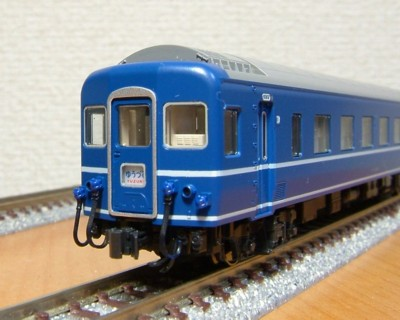
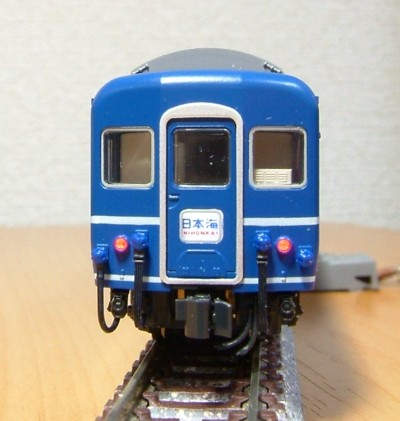
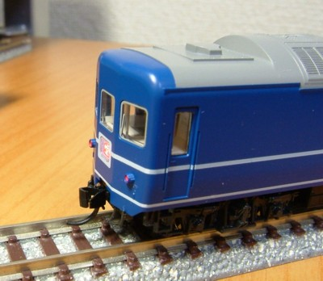

24系24形
2009年末に「ゆうづる」として24系24形が発売されました。
24系24形がNゲージの完成品として3社から発売されるなどとは、Nゲージを始めたころからは想像すらできない状況です。
2年前にマイクロエースから発売されたときは、買おうかどうか迷って店頭まで行ってやめてます。(もっさりした塗装と寝台の表現に参った)
やめといてよかった…


ケーブルに黒を入れてからジャンパ栓の部品を取り付けています。
3本のうち最も左のケーブルは、床下のジャンパ栓受けの裏側に穴が開いていて 床下側にもちゃんとささるようになってます。(説明書には一切記載なし)
KATO、なかなかやります。
カヤ24はダミーカプラーがやたらと飛び出すため、 マグネマティック#1025に交換しました。

トップへ戻る